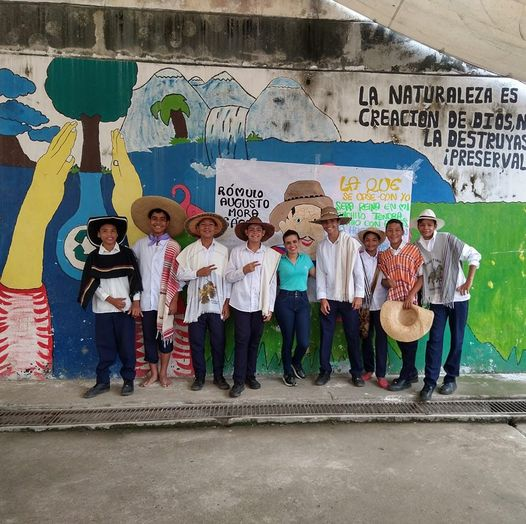

¡Hola! Queremos darte la bienvenida al primer blog digital de "Escritos Jóvenes". Aquí podrás leer acerca de la tendencias de nuestro alrededor y sobre ciertas noticias que son farándula en el mundo de la lecto-escritura juvenil, así como también encontrarás algunos artículos que te van a enseñar ciertos tips sobre cómo elabrorar tus escritos a tu manera. Te invitamos a leer estos primeros artículos que describen el origen de "Escritos Jóvenes" desde nuestra querida institución educativa Colegio Agropecuario Puente Sogamoso. Nota: En la barra superior vas a encontrar el índice de este apartado que te podrá ser de ayuda a la hora de navegar por nuestro sitio.
En Honor Al Indio
El Indio Rómulo Como Fuente De Inspiración Estudiantil

El Colegio Agropecuario Puente Sogamoso sigue promoviendo el hábito de la lectura con diversas actividades creativas.
Hoy leímos la poesía del Indio Rómulo y de otros grandes autores que permiten conocer nuestra riqueza cultural y fortalecer el pensamiento crítico desde diferentes perspectivas.
Felicitaciones a todos los participantes.
El Gran Autor Del Hidalgo Don Quijote De La Mancha
Milton Arturo Acosta Palomino, del grado octavo, realiza una interesante exposición sobre Miguel de Cervantes Saavedra y su gran aporte a la lengua española y a la literatura.
Las Jornadas De Lectura: Estrategia Para Sembrar La Semilla De La Lectura En Los Más Pequeños
Verlos allí con una enorme sonrisa, aventurándose a nuevas experiencias, descubriendo su creatividad y apasionándose con un enriquecedor e intenso proyecto, hace que cada día me sienta más orgullosa de ellos y hace que mantenga viva la esperanza de volver a compartir momentos como este, momentos felices.